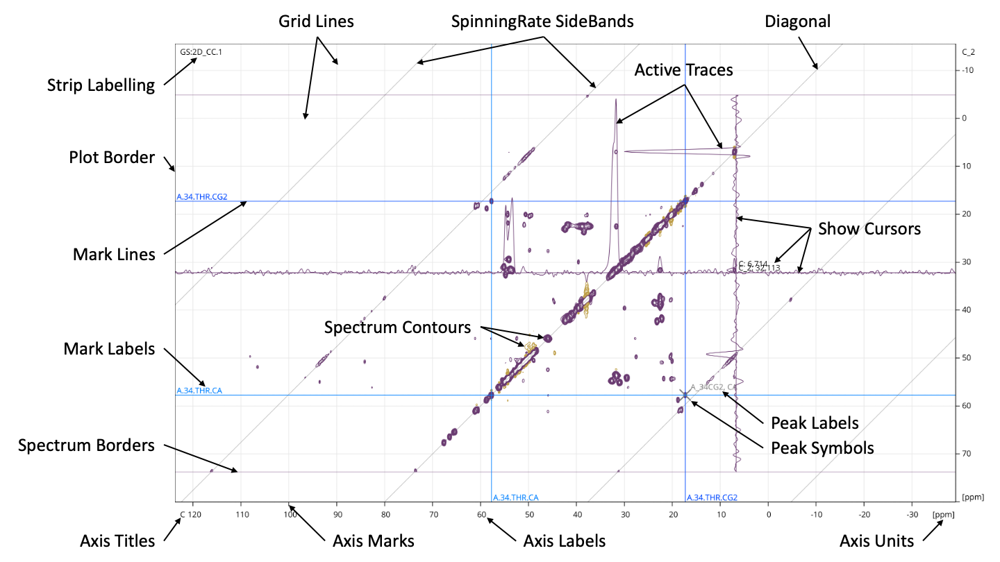
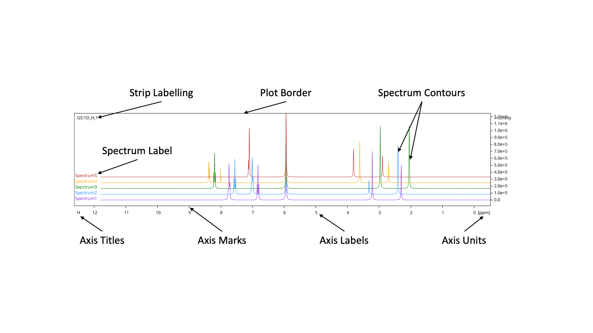

Video
VideoTutorials
& Manual

Printing to File will let you create an image of a Spectrum Display or Strip in .pdf, .png, .ps or .svg format. Go to Spectrum / Print to File and then Print to File... or use the shortcut Ctrl+P (Cmd+P on a Mac).
You can select which Spectrum Display or individual Strip you would like to print followed by your Page Size, Orientation and File type. The Foreground colour is the colour for all the lines, axes etc., the Background Colour will be the background to the contours. So you can choose what colour background you would like for your image, regardless of background you use on screen. The Strip Padding refers to the space between strips if you are printing multiple strips from one Spectrum Display.
By default the image will contain the spectral region shown in the Spectrum Display. You can select to use [the] override region for printing instead and enter your own preferred print region. You can choose to this either by setting minmum and maximum boundaries, or by setting a centre and width. If you wish to return to the values from the Spectrum Display, select one of the axes and click on Set Print Region/Min/Max/Centre/Width. If you selected to print a full Spectrum Display containing several strips at the top of the print dialog, you can select override regions for each strip separately.
You can select to scale your image either relative to the page (percentage) or to use cm or inches per unit (Usually ppm, but could also be Hz) or by unit per cm or inches. You can also change the font and font size at this stage rather than doing it later in a graphics package.
You can select to include or exclude particular Spectra or PeakLists, along with many of additional features. The images below show what these options translate into in the image. Some options are only relevant in particular situations, e.g. Spectrum Labels are only relevant for images of stacked 1D spectra, Spectra on Phasing for Spectrum Displays using the Phasing Console and Integral Symbols / Labels will only be listed if integrals are present in a spectrum in a Spectrum Display.
 